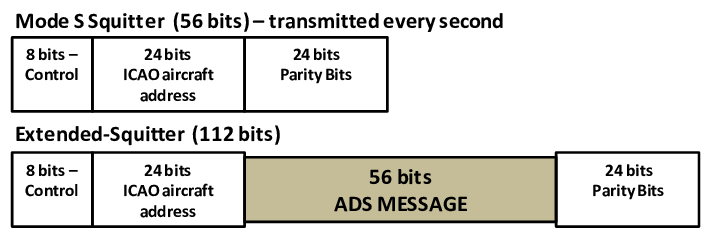

ADS-B
to other ADS-B In equipped aircraft with position and velocity data transmitted every second
Physical layer
Two link solutions are used as the physical layer for relaying ADS-B position reports:
978 MHz link universal access transceiver, rtca-do-282 Minimum Operational Performance Standards for Universal Access Transceiver (UAT) Automatic Dependent Surveillance – Broadcast. RTCA. 29 July 2004. DO-282A.
UAT is a multi-purpose aeronautical data link intended to support not only ADS-B, but also Flight Information Service - Broadcast (FIS-B), Traffic Information Service - Broadcast (TIS-B) and, if required in the future, supplementary ranging and positioning capabilities. The document was developed in parallel with DO-260B.
1090 MHz extended squitter, essentially a modified Mode S transponder DO-260B Minimum Operational Performance Standards for 1090 MHz Extended Squitter Automatic Dependent Surveillance – Broadcast (ADS-B) and Traffic Information Services – Broadcast (TIS-B). RTCA.
ICAO ADS-B Meeting November 27-30, 2018 DO-260B/ED-102A
The format of extended squitter messages has been codified by the ICAO.
https://www.researchgate.net/figure/Format-of-Squitter-and-Extended-Squitter-messages-adapted-from-Orlando-2013_fig3_265085540
https://www.researchgate.net/publication/265085540_Limits_and_Future_GNSS_Solutions_for_Aircraft_Landing_in_low_Visibility_Conditions/
